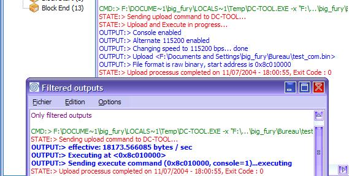

| 14. Filtres |
Ce chapitre traite les filtres. Les filtres permettent de ne pas ajouter au debug log les lignes inutiles. Voici comment les utiliser.
1) Définir les filtres
a) Opérations sur les filtres
Filtrer, d'accord, mais filtrer quoi ? Et bien c'est simple, c'est pour vous que a été créé cette fonction. Je remercie JMD au passage. Vous pouvez configurer les filtres comme vous voulez.
Bien, pour commencer, ouvrez la boîte de configuration des filtres. Pour cela, allez dans Filtres > Configurer les filtres... . Vous avez une boîte de dialogue semblable à celle ci :
Bon, la vôtre est surement vide. Ici on voit que j'ai configuré déjà deux filtres. Très simplement, pour ajouter un filtre, cliquez sur Ajouter... . Une boîte de dialogue vous invite à taper le filtre. Si vous vous êtes trompé, vous pouvez cliquer sur la ligne ou est le filtre, puis cliquer sur Editer... (ou bien clique-droit). Vous pouvez enfin l'effacer en cliquant sur Effacer... .
Vous pouvez également effacer toute la liste en cliquant sur Effacer tout... .
Ce qui est bien, c'est que grâce à la commande Charger / Sauver, vous pouvez faire des presets, ou tout simplement stocker vos filtres dans les fichiers *.flt. Tous les filtres présent dans cette fenêtre sont stockés dans le fichier FILTERS.FLT.
Vous pouvez donc Charger... et remplacer tout le contenu de la boîte de dialogue, vous pouvez aussi Ajout Fichier... pour rajouter à la suite de votre boîte de dialogue des nouveaux éléments et bien sur Sauver... pour conserver votre liste d'éléments.
Cliquez sur Appliquer pour conserver les changements ou sinon sur Annuler.
b) Actions des filtres
C'est bien beau tout ca, mais comment agissent les filtres ?
Exemple : Vous avez spécifié dans votre configuration des filtres la ligne : Zero Down. Voici differents cas de figures. Votre ligne de sortie est :
En résumé, dès que la chaîne ZERO DOWN est trouvée dans la ligne, elle ne sera pas ajoutée.
Autre exemple : Pour bien comprendre, on va prendre autre chose : Vous n'aimez pas la lettre "e". Vous mettez cette lettre dans la boîte de filtre. Quelques exemples :
Plus généralement, chaque fois que une ligne comportera la lettre E, elle sera filtrée.
Les filtres sont très sensible, c'est fait exprès.
2) Activer les filtres
Pour activer les filtres, il suffit de cocher l'élément de menu Activer les filtres disponible dans le menu Filtres, ou en pressant la combinaison de touches Ctrl+Alt+F.
Une fois que les filtres sont en action, les éléments situées dans la boîte de configuration seront retirés du debug log.
Vous pouvez désactiver à chaque instant les filtres en re-sélectionnant l'élément de menu.
3) Voir les lignes filtrées
Comme vous avez pu voir, le filtrage est très sensible. Imaginez vous avez filtré une ligne importante? Comment faire pour la visionner? Vous pouvez voir les lignes filtrées en temps réel. Pour cela, vous avez l'élément de menu Voir les lignes filtrées... disponible dans le menu Filtres.
Dans cette boîte de dialogue vous pouvez voir les lignes filtrées, les sauvegarder, les copier, etc.

En gras, les lignes filtrées.